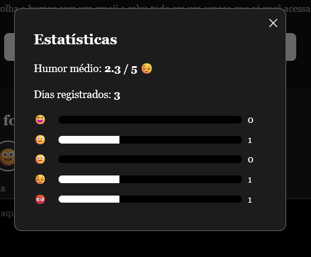

Seu diário, trancado a sete chaves
O Diário com Cadeado é um bullet journal digital e privado: depois de entrar, você escreve suas notas do dia, escolhe o humor com um emoji e salva tudo em um espaço que só você acessa.
Cadastre-se e comece a escrever